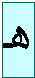
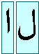
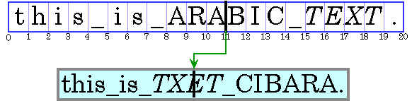
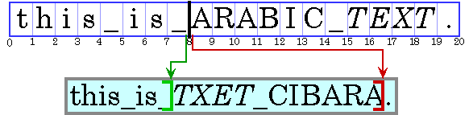

|
A primary design goal of Java is to enable developers to write software that can be deployed easily across a variety of world markets. These markets use very different languages, written in a variety of writing systems. To be acceptable in these markets, you must be able to present text in a way that conforms to the rules of the their writing systems.
Displaying English text correctly is relatively simplethough not quite as simple as you may think! Other writing systems, particularly Arabic and Hebrew, are much more complex than English; requiring reshaping and reordering of text for acceptable display. Moreover, in a Graphical User Interface (GUI) you need to measure text properly; and if you are editing text, you also have to hit-test it to find out what the mouse is selecting, highlight the text to show the selection, break the text into pieces that fit onto a line, and so on.
Fortunately, in the Java Development Kit (JDK) version 1.2, the new TextLayout class and its supporting classes can perform these functions for you, even if the text has multiple styles and contains characters from a mixture of different writing systems, including Arabic and Hebrew. In this paper we discuss several problems posed by these writing systems, and then describe how you can use the new TextLayout classes to handle these problems easily and efficiently.
Even if you write English-only software, you will find that using TextLayout is more convenient than writing your own utility for displaying and measuring text. Additionally, you get much better typography than you could manage by yourself without a great deal of effort.!
Before delving into the additional problems posed
by complicated writing systems, let's briefly review two fundamental issues
you'll encounter even in simple writing systems when using today's graphical
interfaces.
First, unless you are working with a monospace font, different characters
have different widths. Some programmers may not be used to this, and expect
to be able to right-align columns of numbers, for example, simply by padding
with spaces. When characters differ in width, using spaces to position text
is no longer possible. All positioning and measuring of text has to take
into account exactly which characters are used, and not merely how many.
Second, much text nowadays uses multiple fonts and styles. In such text
even the same character can have different shapes and widths, depending
on how it is styled. So programmers must keep track of the style of each
character, and use this information whenever positioning, measuring or rendering
text that contains multiple styles.
Complicated writing systems, such as Hebrew and Arabic, present additional
complications: shaping
and ordering. Let's
examine these in more detail.
The particular shape used to represent a character is called a glyph. Many different glyphs can be used to represent a single character, depending on the font and style (italic, bold, and so on). Glyphs can also vary depending on the glyphs before and after them. This shows up even in English: if you write some cursive text by hand, for example, the glyphs change in this way.
|  | |||
| Unconnected | Connect on right | Connect on both sides | Connect on left |
Some writing systems, particularly Arabic, require this feature. Unlike in English, cursive forms are mandatory in Arabicit is unacceptable to present the text without using cursive forms. Sometimes these cursive forms differ radically in shape. For example, the Arabic letter heh has the four cursive forms shown in Figure 1. Although the shapes vary widely, such cursive shape-changing is not fundamentally different from cursive writing in English.
| (a) | (b) |
Sometimes glyphs change shape even more, and merge together into another glyph. For example, most English fonts contain special glyphs to account for the overhang on the letter f colliding with following glyphs. Look at Figure 2 to see an example of this. When two different glyphs (a) merge to form such a single glyph (b), that new glyph is called a ligature.
|  | |
| (a) | (b) |
Arabic has ligatures as well, although the shapes change more radically than they do in English. In Figure 3, we see how the two Arabic characters (a) form a ligature (b). Once again, unlike in English, some of these ligatures are are mandatory in Arabicit is unacceptable to present the text without using these ligatures.
From this discussion you should remember the cardinal rules for international GUI text:
- Glyphs are the visual representations of characters.
- The shapes, sizes, and positions of glyphs are dependent on their context.
- Drawing or measuring out of context will give the wrong answer.
Text which uses the Unicode character encoding (used in Java) is stored in memory in logical order. Logical order is the order in which characters and words are read and written. Logical order can differ from visual order, the order in which corresponding glyphs appear.
Every writing system (or script) has a script order, which is the visual order for glyphs in that writing system. For example, the script order for Roman text is left-to-right, while for Arabic and Hebrew it is right-to-left. In addition to script order, some writing systems have other rules for arranging glyphs and words on lines of text. Arabic and Hebrew numbers run left-to-right, even though the letters run right-to-left. (This means that Arabic and Hebrew, even with no embedded English text, is truly bidirectional.) For another example, Hindi writing is left-to-right, but a short i will rearrange so that it is to the left of a logically preceding consonant.
A writing system's visual order must be maintained, even when languages are mixed together. Figure 4 shows this with an Arabic phrase in an English sentence. (To keep things clearer, we will represent Arabic or Hebrew text by uppercase letters in the figures from here on. In addition, we will show the internal characters in a set of character boxes, with the corresponding displayed glyphs below it, and make spaces visible by using an underbar.)
|
The Arabic words are displayed in right-to-left order, even though they appear in English text. Note that the italic Arabic is logically after the plain Arabic, and so is visually to the left of the plain Arabic.
When displaying a line with a mixture of both left-to-right and right-to-left text, the base direction is significant. If the text is basically English, for example, with some embedded Arabic, then the base direction is left to right. If the text is basically Arabic, with some embedded English or numbers, then the base direction is right to left.
A base direction determines the order in which segments of text with a common direction are displayed. In Figure 5, the base direction is left to right, as shown by the blue arrow. There are three directional runs within this text: first left to right, then right to left, and then left to right again (the final period). For more information about the precise algorithm used to order glyphs within a line, see the description of the Bidirectional Algorithm in The Unicode Standard, Version 2.0, Section 3.11.
It is common to allow graphics to be embedded in the flow of text, such as in HTML or in word processors. These inline graphics behave like glyphs in terms of flowing with the text, line-wrapping, and so on. Notice that such inline graphics also need to be positioned using the bidirectional algorithm, since otherwise they would also cause bidirectional text to break.
Now that we have discussed just a few of the complications involved in international text, we will show you how the TextLayout class handles these cases for you. In this section we will illustrate the main operations involved in dealing with GUI text. For each operation, we will outline the naïve approach to doing the operation with plain English text, illustrate why this approach fails, and then show how to use TextLayout instead. These operations include:
The naïve approach to drawing styled text into a Graphics is pretty simple: First, set a drawing position for the text. Then, for each style run (that is, each substring of characters with the same style), set the appropriate Font on the Graphics, draw all of the characters in the style run, then update the drawing position by the width of the glyphs.
This approach fails badly for bidirectional text. The style run boundaries will break the directional runs in the embedded Arabic text, and the style runs will be drawn in the wrong order. Compare the correct ordering in Figures 4 with the incorrect ordering in Figure 5, where the Arabic text is incorrectly broken into two pieces by the naïve algorithm.
TextLayout displays text with correct shaping and ordering, even with mixed-style, bidirectional text. Figure 6 shows how TextLayout can be used to draw the text in Figure 4.
myGraphics.translate(x, y); TextLayout layout = new TextLayout(styledString); myGraphics.draw(layout, 0, 0); |
To store information about styles on text, TextLayout uses the new extensible style mechanism in JDK 1.2, which allows much better specification of text styles than in JDK 1.1. This paper won't go into the details of this style mechanism, and instead just use styledString to represent styled text, as in this example.
The two numeric parameters to draw() specify the location in the graphics where the origin of the TextLayout will appear. The origin is at or near the leftmost point of the baseline. In this example, the graphics system is translated to the desired origin, and the TextLayout is then drawn at location (0, 0).
Translating the graphics system is especially convenient when drawing Shapes returned from TextLayout (see below), since they are relative to the origin of the TextLayout which produced them. In all further examples, it is assumed that the graphics system has been translated such that TextLayouts may be drawn at (0, 0).
To correctly shape and order the glyphs representing a line of text, TextLayout must know the full context of that text. If the text fits on a single line, such as a single-word label for a button or menu, or a line in a dialog box, you can construct a TextLayout directly from the text. But, if you have more text than will fit on a single line and need to break it into multiple lines, or want to break text on a single line into tabbed segments, you cannot construct a TextLayout directly. This is because the Unicode bidirectional algorithm sometimes requires an entire paragraph of context. In these cases, you must use a LineBreakMeasurer so that you can provide sufficient context. We discuss LineBreakMeasurer in more detail below.
We previously discussed the base direction, and the effect that it has on the ordering of runs in a line. Normally, the base direction is set using an attribute on the text. If that attribute is missing, TextLayout follows the Unicode bidirectional algorithm in deriving the base direction from the initial characters of a paragraph.
In editable text, a caret is used to graphically represent the current insertion offset, the position in the text where new characters will be inserted. Typically, a caret is shown as a blinking vertical bar between two glyphs. New characters will be inserted and displayed at the caret's location. For simple left-to-right text, the caret's horizontal position could be naïvely computed by adding the widths of the glyphs between the beginning of the line and the insertion offset. The caret is then drawn as a vertical line whose height is the height of the text line.
 |
With bidirectional text, caret display is more complicated than this. The naïve algorithm adds the widths of glyphs before a character offset, not the widths of glyphs to the left of a glyph offset. That will cause the failure shown in Figure 7, where the caret is drawn in the wrong place. Moreover, if we add the widths of glyphs out of their context, then their metrics will not match the display, since shaping may take place.
 |
There is another serious problem with caret display in bidirectional text: insertion offsets on directional boundaries have two possible caret positions. Look at the current insertion offset in Figure 8, between the '_' and the 'A'. Since in the display text the two corresponding glyphs wind up not being adjacent, this character offset corresponds to two possible visual positions: after the '_', and before the 'A'. (In our examples, we show the carets with bars to show the glyph they correspond to.) If an Arabic character were entered, its glyph would appear immediately before (to the right of) the 'A'; if an English character were entered, its glyph would appear after (to the right of the '_').
Shape[] caretShapes = layout.getCaretShapes(hit);
myGraphics.setColor(STRONG_CARET_COLOR);
myGraphics.draw(caretShapes[0]);
if (caretShapes[1] != null) {
myGraphics.setColor(WEAK_CARET_COLOR);
myGraphics.draw(caretShapes[1]);
}
|
TextLayout handles the complexities of caret display, as shown in Figure 9. Given an insertion offset, the getCaretShapes() method will return a two-element array of Shape, referred to here as caretShapes. The value in caretShapes[0] represents the strong (primary) caret, while the value in caretShapes[1] represents a weak (secondary) caret (if it exists). You then simply draw the Shapes returned from getCaretShapes(). In this example the strong caret's color is different from the weak caret's color. This is a common way to differentiate the two carets.
|
TextLayout will produce angled carets for italic and oblique glyphs. These caret positions are also used as the boundaries between glyphs for highlighting and hit-testing, to produce a consistent user experience. Figure 10 some samples of this.
If you would prefer to use your own shapes for carets, you can also retrieve the position and angle of the carets from the TextLayout, and draw them yourself. You also don't have to use dual carets: TextLayout lets you choose a different policy to use for displaying carets if you want.
Often, a location in a graphics device is to be converted to a offset in text. For example, when a user clicks the mouse on selectable text, the location of the mouse must be converted to an offset in the text for use as one end of the selection range. Logically this is the inverse of the caret positioning operation. Hit testing in simple left-to-right text is essentially a process of measuring glyph widths until the glyph at the correct location is found. This position is then mapped back to a character offset.
|
The problems with this approach in bidirectional text are similar to those for caret display. As Figure 11 shows, a single visual location in the display can correspond to two very different offsets in the source text. Fortunately, the side of the offset can help to distinguish the two alternatives.
TextHitInfo hit = layout.hitTestChar(x, y); int insertionOffset = hit.getInsertionOffset(); |
TextLayout takes care of hit testing for you. TextLayout's method hitTestChar() takes x and y coordinates from the mouse as arguments, and returns an instance of a TextHitInfo class, which indicates the insertion offset for the specified position, and which side the hit was on. (The insertion offset is the nearest one in the text: if it is off one end of the line then the offsets at that end is returned.) Figure 12 shows an example of this in use.
Hit testing and caret positioning are consistent with each other. Maintaining this invariant in italic text, in which the carets are angled, requires both the x and y coordinates of the point. Thus, hitTestChar() takes both coordinates as parameters, not just the x coordinate. This also allows this method to handle future extensions that require both coordinates, such as vertical text for Japanese, Chinese and Korean.
A selected range of characters is represented graphically using a highlight region, an area in which glyphs are displayed with inverse video, or against a background color which is different from other glyphs'. Highlight regions, like carets, are more complicated for bidirectional text than for simple left-to-right text. A contiguous range of characters may not have a contiguous highlight region on screen, if the selection range includes both left-to-right and right-to-left characters. See Figure 13.
|
Conversely, a highlight region showing a visually contiguous range of glyphs may not correspond to a single contiguous range of characters. See Figure 14.
|
This results in two strategies for selection highlighting: logical highlighting and visual highlighting. With logical highlighting, the selected characters are always contiguous in the text model, and the highlight region is allowed to be discontiguous. With visual highlighting, there may be more than one range of selected characters, but the highlight region is always contiguous. Logical highlighting is simpler for the programmer to use, since the selected characters are always contiguous in the text. TextLayout supports both logical and visual highlighting.
Shape highlightRegion = layout.getLogicalHighlightShape(hit1, hit2); graphics.setColor(HIGHLIGHT_COLOR); graphics.fill(highlightRegion); graphics.draw(layout, 0, 0); |
You can use TextLayout to create highlight regions. The method getLogicalHighlightShape() takes two insertion offsets as parameters and returns a Shape representing the highlight region for the selection range corresponding to the two offsets. A simple way to show highlighting is to fill this Shape with the highlight color, then draw the TextLayout over the Shape.This is illustrated in Figure 15.
All text editors allow arrow keys to move the caret. Users expect the caret to move visually in the direction of the arrow key. In left-to-right text, moving the insertion offset is simple: the right arrow key increases the insertion offset by one, and the left arrow key decreases it by one. In bidirectional text, or in text with ligatures, this would cause the caret to jump across glyphs at direction boundaries and move in the reverse direction within different directional runs.
|
Smooth arrow movement requires the character offset to not move uniformly. For example, if the current insertion offset is within a run of right-to-left characters, the right arrow key will decrease the insertion offset, and the left arrow key will increase it. Directional boundaries are even more complicated, and cause the character offset to jump around quite a bit. Figure 16 illustrates using the arrow key to move the caret across a boundary. Progressing through the three screen positions from left to right correspond to progressing through the character offsets 7, then 19, then 18!
Additionally, certain glyphs should never have a caret between them; instead, the caret should move around as if these glyphs were representing a single character. For example, there should never be a caret between an o and an umlaut wherever they are represented by two separate characters. See The Unicode Standard, Version 2.0, Chapter 5, for more information.
TextHitInfo newInsertionOffset = layout.getNextRightHit(insertionOffset);
if (newInsertionOffset != null) {
Shape[] caretShapes = layout.getCaretShapes(newInsertionOffset);
// draw carets...
insertionOffset = newInsertionOffset;
}
|
TextLayout will compute the insertion offset resulting from a left or right arrow key. Given a TextHitInfo representing the current insertion offset, the method getNextRightHit() will return a TextHitInfo representing the correct insertion offset resulting from a right arrow key. The strong caret is used to compute the next caret position; the definition of this depends on the caret policy (see above). For the left arrow key, getNextLeftHit() works analogously.
Figure 17 demonstrates how a client might respond to a right arrow key by moving the current insertion offset, represented by insertionOffset. If there isn't a caret to the right of the current caret, getNextRightHit() returns null.
TextLayout provides graphical metrics for the entire range of text it represents. Metrics available from TextLayout include ascent, descent, leading, advance, visible advance, and the bounding rectangle.
Ascent, descent, and leading are properties of fonts. A font's ascent is the distance from the tops of the tallest glyphs to the baseline. A font's descent is the distance from the baseline to the bottom of the descenders on the font's glyphs. The leading is the recommended vertical distance from the bottom of the descenders to the top of the next line in a multi-line setting.
A TextLayout may have more than one font associated with different style runs. The ascent, descent for a TextLayout are the maximum values for these metrics in the fonts used in the TextLayout. (The computation of the TextLayout's leading is slightly more complicatednot just the maximum of its fonts' leadings.)
The advance of a TextLayout is its length (the distance from the left edge of the leftmost glyph to the right edge of the rightmost glyph). For clarity, the advance is sometimes called the total advance. The visible advance is the length of the TextLayout without its trailing whitespace.
graphics.draw(layout, 0, 0); Rectangle2D bounds = layout.getBounds(); graphics.drawRect(bounds.getX()-1, bounds.getY()-1, bounds.getWidth()+2, bounds.getHeight()+2); |
The bounding box encloses the text in the TextLayout. It includes all the visible glyphs and the caret boundaries (some of these may hang over the origin or origin + advance). To retrieve the bounding box for a TextLayout, call getBounds(). The bounding box is relative to the origin of the TextLayout, not to any particular screen position. The code in Figure 18 draws a TextLayout inside of its bounding box.
The examples above show common uses for TextLayout in a single-line context. TextLayout can also be used to display a piece of text across multiple lines. For example, you might take a paragraph of text, line-wrap the text to a certain width, and display the paragraph as multiple lines of text. When you do this, you do not create the TextLayouts representing lines of text directly. Instead, LineBreakMeasurer, a companion class, generates them for you.
When text is displayed in multiple lines, the length of the lines is usually determined by the width of the display area. Line breaking (or line wrapping) is the process of determining where lines begin and end, given a graphical width in which lines must fit. The most common strategy for line break is to place as many words on each line as will fit. This strategy is implemented in LineBreakMeasurer. Other more complex line break strategies use hyphenation, or attempt to minimize the differences in line length within paragraphs. These alternative strategies can be implemented by using low-level calls.
You may be wondering why LineBreakMeasurer is required; that is, why you can't measure the text and create TextLayouts for it yourself. Recall that in some cases, bidirectional ordering cannot be performed correctly unless all of the text in a paragraph is available. LineBreakMeasurer encapsulates enough information about the context to produce correct TextLayouts.
To break a paragraph of text into lines, construct a LineBreakMeasurer with the entire paragraph. You can then use LineBreakMeasurer to walk through the text, generating TextLayouts for each line. Specifically, the method nextLayout() returns a TextLayout whose visible advance does not exceed the given width. LineBreakMeasurer maintains an offset within the text. Initially, the offset is at the start of the text; each call to nextLayout() moves the offset by the character count of the TextLayout that was returned. Once this offset reaches the end of the text, a call to nextLayout() returns null.
Point2D pen = initialPosition;
LineBreakMeasurer measurer =
new LineBreakMeasurer(styledText, myBreakIterator);
while (true) {
TextLayout layout = measurer.nextLayout(wrappingWidth);
if (layout == null) break;
pen.y += layout.getAscent();
float dx = 0;
if (layout.isLeftToRight())
dx = wrappingWidth - layout.getAdvance();
layout.draw(graphics, pen.x + dx, pen.y);
pen.y += layout.getDescent() + layout.getLeading();
}
|
Figure 19 shows how to break a text segment into lines and draw the lines into a Graphics. This code aligns the lines either to a left margin or a right margin, depending on whether the base text direction is left-to-right or right-to-left.
Every call to nextLayout()requires a width in which the TextLayout will fit. By varying this width, you can break text to fit into complicated areas, such as an HTML page with images in fixed positions, or into tab-stop fields. You can optionally pass in a BreakIterator to tell LineBreakMeasurer where valid breakpoints are; if you don't supply one then the break iterator for the default locale is used.
TextLayout, a class in the JDK 1.2, provides for correct display of text in English, Arabic, Hebrew, and other languages. Furthermore, TextLayout facilitates user interaction with text by providing caret display, hit-testing, selection, and line breaking capabilities. With TextLayout, you will find that working with international text is as easy as working with English text. You will also find that TextLayout is useful for English-only software, since it composes multiple text styles on a line and provides convenient measurement and line breaking.
There are many ways to use TextLayout that we haven't discussed here. It supports full and partial justification, a variety of text attributes, text with multiple baselines, and custom carets. There also are low-level services that give you complete control over the glyph mapping and glyph positioning, if you are doing more sophisticated programs such as desktop publishing. Some of these topics will be covered in future publications.
A common question people ask is about TextLayout performance. What do you pay to get all of these features? The architecture of TextLayout is designed to 'fastpath' the standard cases of simple, monodirectional textthere should be no significant performance impact for using TextLayout for such cases. When the text does include Arabic or Hebrew text, then there is some performance impact in using TextLayout, commensurate with the additional requirements it has to satisfy. However, this is typically on the order of microseconds per character on today's machines, which is dominated by normal drawing code.
This article describes the current state of TextLayout and its related classes. Since version 1.2 of the JDK has not yet shipped, there may be small differences between classes described here and those included in the final version of the JDK. The initial version of TextLayout supports simple writing systems such as Latin, Greek, Cyrillic, Japanese, Korean, and Chinese, and bidirectional writing systems such as Arabic and Hebrew. Future versions of TextLayout will add full support for Indic and Thai writing systems, and vertical display of Japanese and Chinese.
If you would like to know more about internationalization in Java, see JavaSoft's internationalization page. Information about Unicode character encoding can be found at the Unicode Consortium site.
John Fitzpatrick, who has recently moved from Taligent to the bottom of the earth, played a crucial role in the design and implementation of Text Layout. Kathleen Wilson is the manager for both the text and international groups, and is responsible for the successful organization of the project. The text and international groups are moving into the IBM Centre for Java Technology (Silicon Valley). We would like to thank Gina Poole, Maire Weick, Pat Sueltz, Sue Williams, and Elizabeth Nichols at IBM for their continued support of our contributions into the JDK.
The text layout classes in JDK 1.2 form just one part of the Java 2D support, which adds a wide variety of graphic capabilities to Java. Without the help of people at JavaSoft, including Jerry Evans, Brian Beck, Tim Prinzing, and Jeet Kaul, this work would not have been possible.
We would also like to thank <TBD> for their feedback on drafts of this document.
Dr. Mark Davis is the director of the Core Technologies department at Taligent, Inc, a wholly owned subsidiary of IBM. Mark co-founded the Unicode effort, and is the president of the Unicode Consortium. He is a principal co-author and editor of the Unicode Standard, Version 1.0 and the new Version 2.0. Mark has considerable expertise in both management and software development. At various times, his department has included software groups covering text, international, operating system services, Windows porting, and technical communications. Technically, he specializes in object-oriented programming and in the architecture and implementation of international and text software: ranging from the years he spent programming in Switzerland, to co-authoring the Macintosh KanjiTalk and the Macintosh Script Manager (which later became WorldScript), to authoring the Arabic and Hebrew Macintosh systems, and more recently to architecting the bulk of the Java 1.1 international libraries.
Doug Felt has worked as a programmer for over 14 years. After graduating from Stanford University in 1982, he worked for two unsuccessful startups and in his own business before becoming a programmer at Stanford, where he spent seven years developing innovative educational software with Stanford faculty. He joined Taligent shortly after its founding, and has been part of the Text and International team working in C++ and Java for the past two years.
John Raley, a resident of San Francisco, CA, has written text editing software on a variety of platforms, including Macintosh, Windows, Unix, and Java. As part of the Text and International team at Taligent, he contributed to the development of Line Layout services for Java. Additionally, he worked on a styled text editor for Java 1.0, and wrote an editor for IBM's OpenClass framework. John received his Master's degree in Computer Science from Virginia Tech in 1996.
Copyright 1997, Taligent, Inc. All rights reserved. Java is a trademark of Sun Microsystems, Inc. Unicode is a trademark of Unicode, Inc.